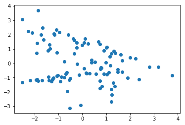
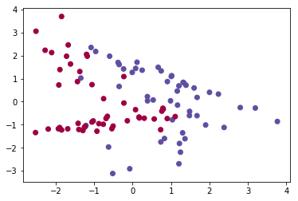
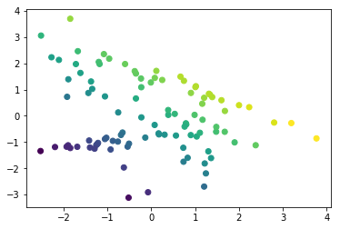
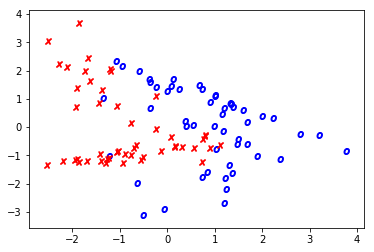
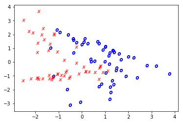

Scatter plot tips
Scatter plots are the bread and butter of anyone doing data exploration. It’s particularly useful to style each point plotted based on values. So let’s look at a simple example.
%pylab inline
from sklearn.datasets import make_classification
from sklearn.linear_model import LogisticRegression
X, y = make_classification(n_features=2, n_redundant=0)
x0, x1 = X[:, 0], X[:, 1]
plt.scatter(x0, x1)Populating the interactive namespace from numpy and matplotlib
<matplotlib.collections.PathCollection at 0x1ee78026278>

Each point has a corresponding True/False value.
Scatter by Color
We can use the c= argument to change the color of the point based on the value in the array. It plots cleanly for distinct values
plt.scatter(x0, x1, c=y, cmap='Spectral')<matplotlib.collections.PathCollection at 0x1ee75deec50>

And on a spectrum for continuous values
plt.scatter(x0, x1, c=x0+x1)<matplotlib.collections.PathCollection at 0x1ee79475898>

Conditionally Styling
Other arguments aren’t so friendly. For instance, marker= only takes one value.
We can make good use of a dict of values and the builtin enumerate function to (tediously) plot each point separately, according to whatever rules you want.
markers = {0: '$x$', 1: '$o$'}
colors = {0: 'red', 1: 'blue'}
for idx, _ in enumerate(x0):
plt.scatter(x0[idx], x1[idx],
marker=markers[y[idx]],
c=colors[y[idx]])
I think this dict-unpacking solution looks much neater.
kwargs = {0: {'color': 'red', 'marker': '$x$', 'alpha': .5},
1: {'color': 'blue', 'marker': '$o$'}}
for idx, _ in enumerate(x0):
plt.scatter(x0[idx], x1[idx], **kwargs[y[idx]])